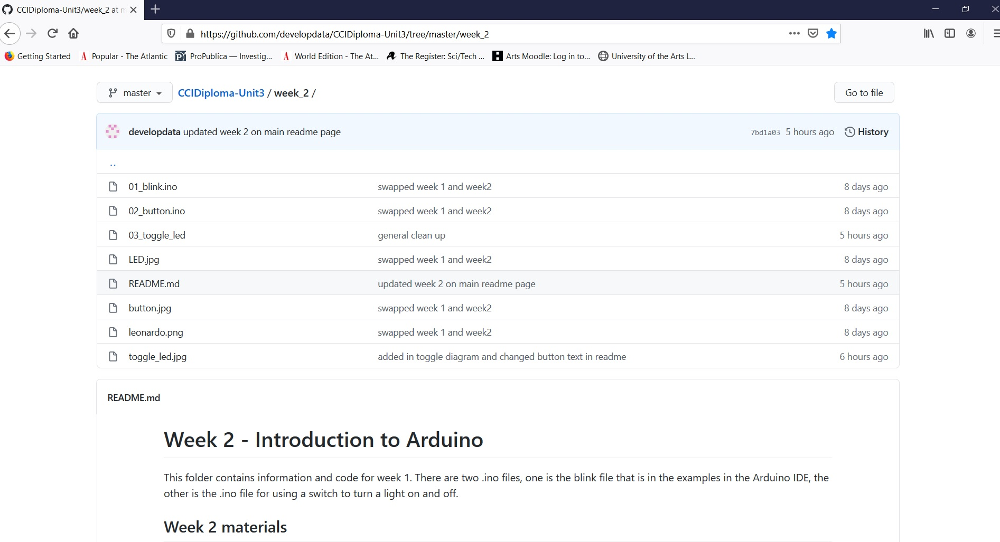
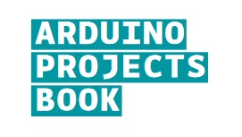
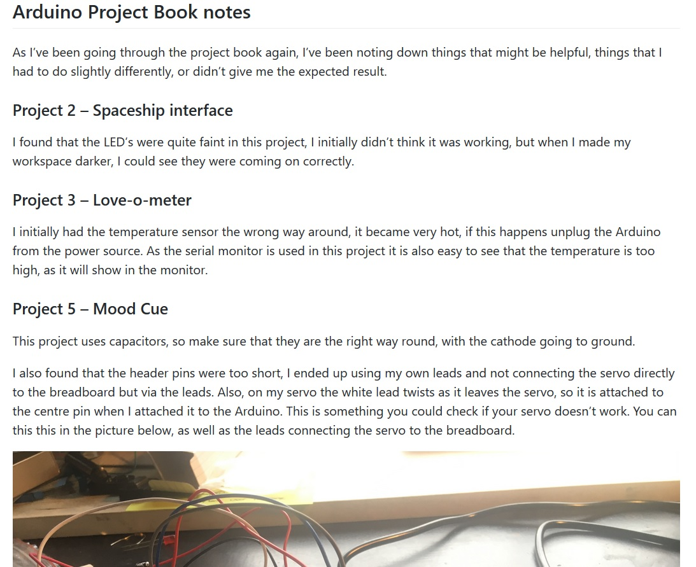
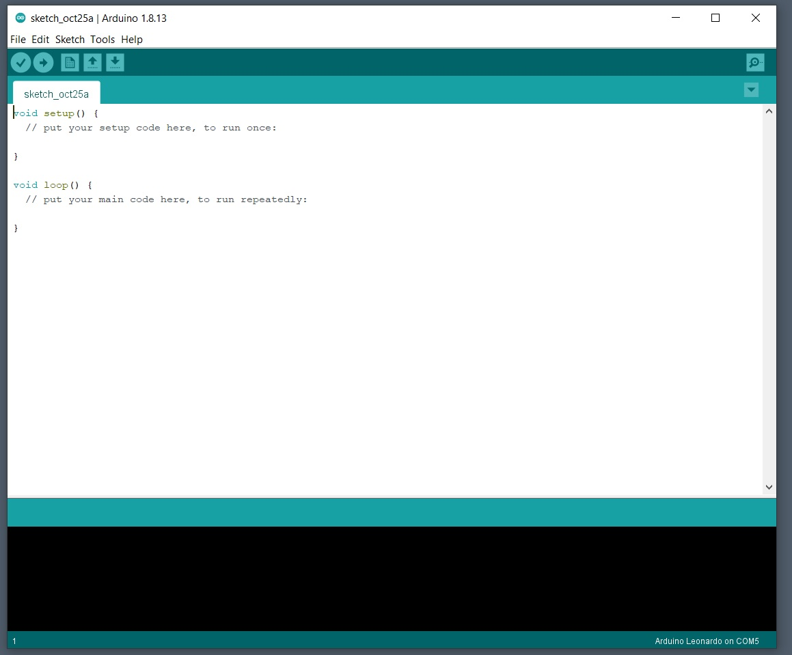
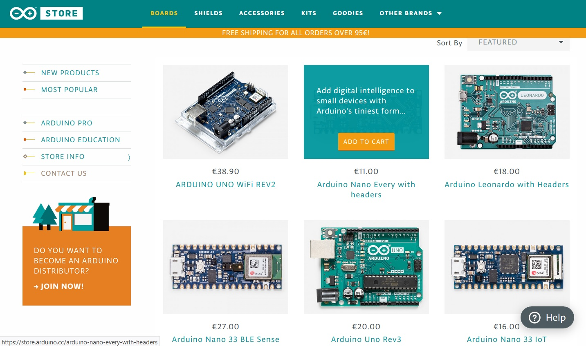
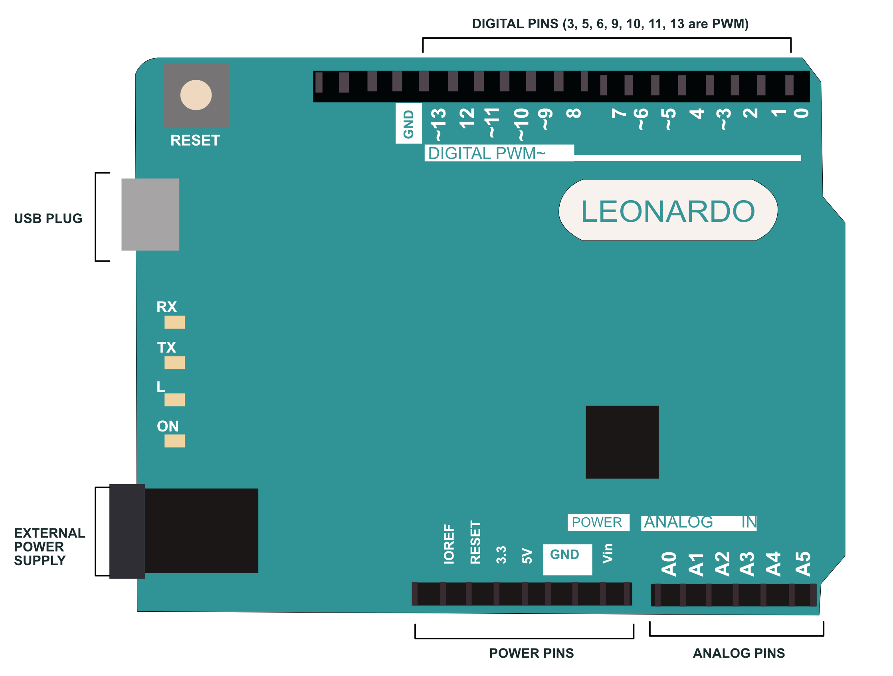
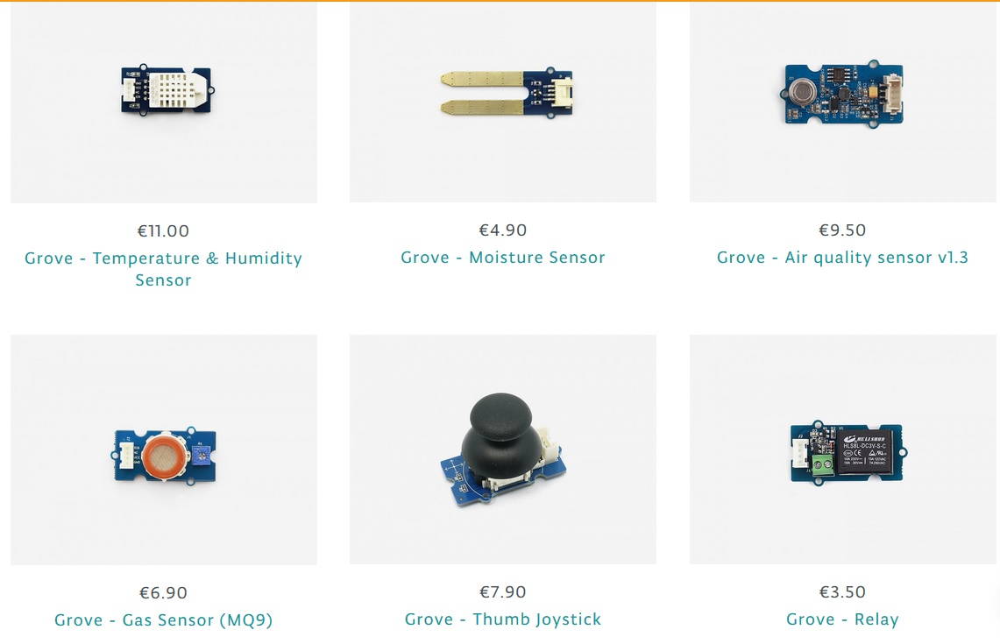
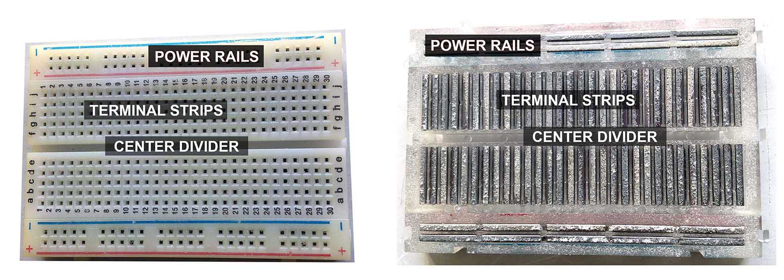
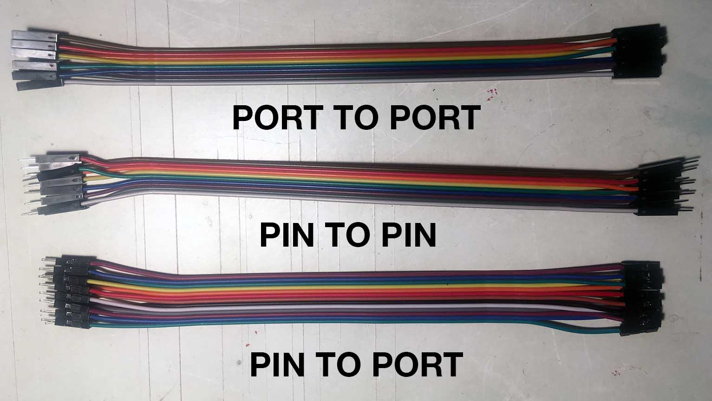
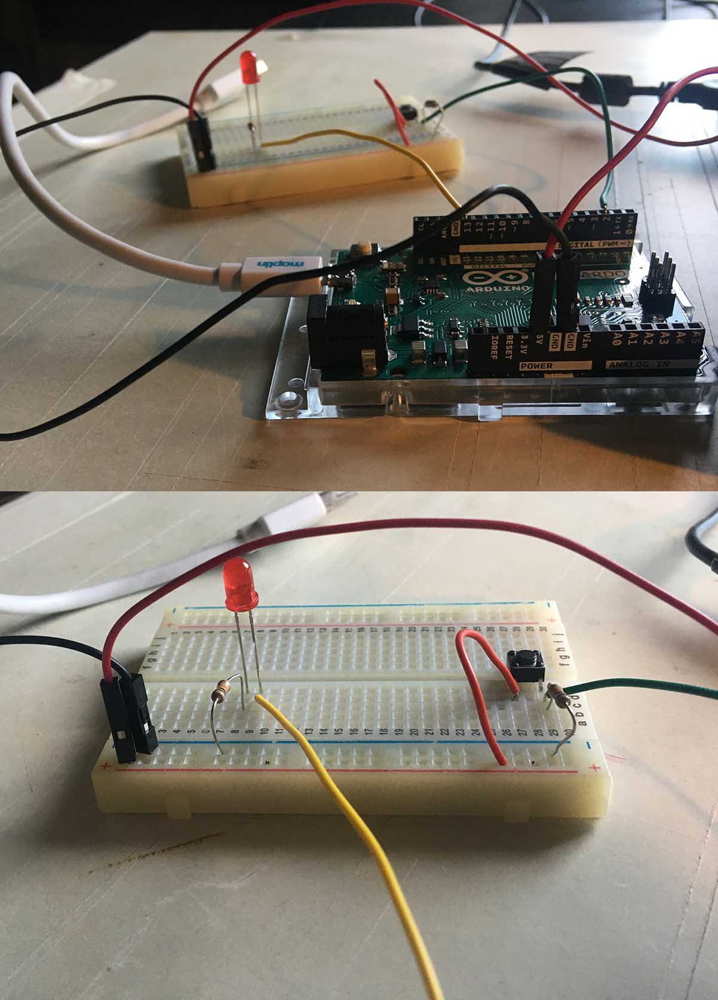

Unit 3
Phsycial computing - Introduction to Arduino
Welcome to week 2. This week you will be getting started with Arduino, finding out how to program it and connect components to it. The aim of this workshop is to get you comfortable attaching components to an Arduino and using the Arduino development Environment (the IDE). There are a number of videos to watch for the introduction, in this video I will give an introduction to the Arduino, components and peripherals. There are further video for four projects. The first is one of the most basic projects, getting the light on the Arduino to blink. The second project uses the same code but attaches an external LED. The third project introduces a button used to turn the light on and off, and the fourth takes this code further so the light toggles on and off with the button.

Along with the videos you can also look at the week two GitHub page https://github.com/developdata/CCIDiploma-Unit3/tree/master/week_2 which explains these projects and the code.

There is an Arduino project book which is a really good way to learn Arduino (https://bastiaanvanhengel.files.wordpress.com/2016/06/arduino_projects_book.pdf ) it goes through the basics and will build your knowledge. Over the next four weeks, as homework I want you to work through the book.

At the bottom of the unit github page I have put notes I’ve made as I’ve gone through the book again (https://github.com/developdata/CCIDiploma-Unit3#arduino-project-book-notes )
Safety
- Disconnect the Arduino from its power source when connecting components
- At this point don't go above 9V
- Disconnect Arduino if a component gets hot or you smell burning
- Capacitors can pop or explode if connected to the wrong pin
In this unit you will be working with electricity and electrical components. Safety has to be considered when working with electricity. When working on Arduino projects:
Make sure that the Arduino is disconnected from its power source when you are attaching components, this power source maybe through the USB attachment to your computer or an external battery.
All the projects in the book either use 5V (power from the USB) or 9V (through a battery). At this point you shouldn't go above this voltage for the Arduino.
If a component gets overly hot, or you smell burning disconnect the power supply from the Arduino.
There are some components that will overheat if they are not connected correctly, such as the temperature sensor, if it starts to get hot, disconnect the power supply
Capacitors need to have the power and ground going to the correct pin, it they don’t they can pop or explode
Getting started with Arduino
On the Arduino there is a microcontroller that you can program.

These programs are called Sketches, which have an .ino extension and can be created using the Arduino IDE. Once you have written your code you need to upload it to your Arduino, you do this by connecting your Arduino to your computer via USB and then downloading it to the Arduino. In order to do this the Sketch needs to know which Arduino you are using and which port it is connected to.
Computers have a series of ports that you can connect devices to, such as a keyboard or mouse. These ports could be USB, VGA or Ethernet, each port has a number.

There are a number of different types of Arduino boards with different capabilities. They all let you attach sensors and electronic components to build interactive electronic systems.
There is also a programming environment, and IDE so you can write code for your Arduino in its programming language.
The different Arduinos are similar, the layout for the Leonardo includes

The different Arduinos are similar, the layout for the Leonardo includes
The Arduino has a series of analog and digital pins that you can connect components to, these are the digital pins, and these are the analog pins.
You might have noticed the ~ on some of the digital pins, these are pins that support pulse width modulation this simulates an analog output using a digital output. I will be talking through analog and digital outputs in a few weeks.
There are also a power and ground pins.
There is a connector to attach a USB, and one to connect external power.
And a reset button, which resets the microcontroller to factory defaults, it erases the code you have put on it.
There is also a light on the board that can be programmed.

There are a number of different types of Arduino boards with different capabilities. They all let you attach sensors and electronic components to build interactive electronic systems.
There is also a programming environment, and IDE so you can write code for your Arduino in its programming language.
The different Arduinos are similar, the layout for the Leonardo includes

A breadboard lets you connect components to an Arduino without soldering. It has a series of holes for the component's legs and the jump wires.
There are different configurations of breadboards, the one in your kit has horizonal power rails that run the length of the bread board on each side. One of the power rails is positive and the other negative, ground. There are shorter terminal strips vertically. When you look inside the breadboard you can see the conductive material for both. It makes it easier to see that when you put the leg of a component in a hole in the terminal strip, that whole strip is part of that legs circuit.
As the power rails run horizontally you can place the ground or the power lead at any point on the rail.
There is a center divider isn’t connected to a conductive material so divides the two halves of the board.

Jumper Leads
Jump leads come in many colors. By convention black leads are used for ground (negative) connections and red leads for positive connections. They are made of conductive wire covered by an isolating material. The end of the lead can either be a pin, or a port. For the projects in the book you will be using jumper leads which have pins at either end, but there are leads that have pin at one end and port at the other, or two ports.

Jumper Leads
Jump leads come in many colors. By convention black leads are used for ground (negative) connections and red leads for positive connections. They are made of conductive wire covered by an isolating material. The end of the lead can either be a pin, or a port. For the projects in the book you will be using jumper leads which have pins at either end, but there are leads that have pin at one end and port at the other, or two ports.